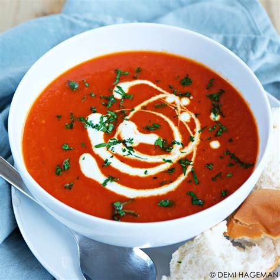

Tomatensoep
Ingrediënten:
- 1 kg rijpe tomaten, in stukjes gesneden
- 1 ui, fijngehakt
- 2 teentjes knoflook, fijngehakt
- 1 wortel, geschild en in plakjes gesneden
- 1 stengel bleekselderij, in plakjes gesneden
- 1 liter groentebouillon
- 2 eetlepels olijfolie
- 1 theelepel gedroogde oregano
- 1 theelepel gedroogde basilicum
- Zout en peper naar smaak
- Verse basilicumblaadjes (voor garnering)
Instructies:
- Verhit de olijfolie in een grote pan op middelhoog vuur. Voeg de ui, knoflook, wortel en bleekselderij toe. Bak deze groenten ongeveer 5 minuten, of tot ze zacht zijn.
- Voeg de tomaten, oregano, basilicum, zout en peper toe. Roer alles goed door en laat het geheel ongeveer 10 minuten sudderen.
- Giet de groentebouillon in de pan en breng de soep aan de kook. Zet het vuur dan lager, dek de pan af en laat de soep 15-20 minuten zachtjes pruttelen.
- Haal de pan van het vuur en gebruik een staafmixer om de soep glad te pureren. Als je geen staafmixer hebt, kun je de soep in porties in een blender pureren.
- Proef de soep en voeg indien nodig meer zout en peper toe. Serveer de tomatensoep warm, gegarneerd met verse basilicumblaadjes.

Je kunt dit recept aanpassen naar je eigen smaak en eventueel extra ingrediënten toevoegen, zoals een scheutje room voor een romigere textuur. Geniet van je heerlijke tomatensoep!